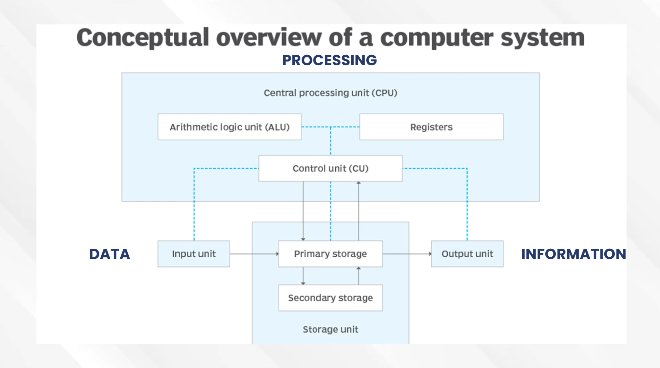
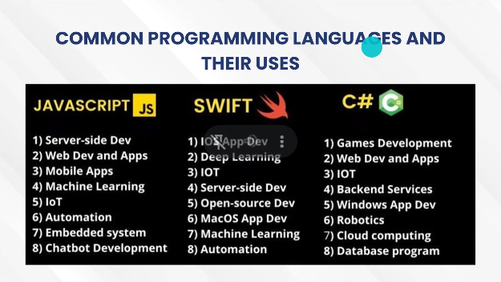
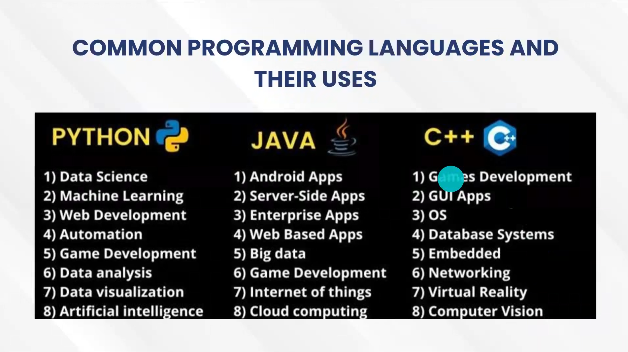
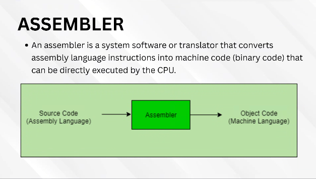
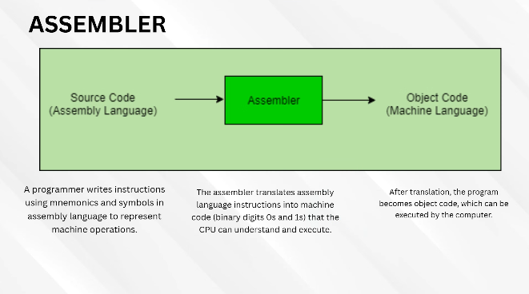
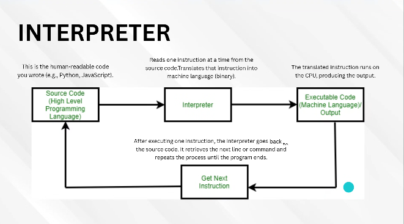
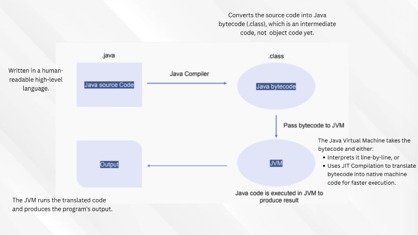
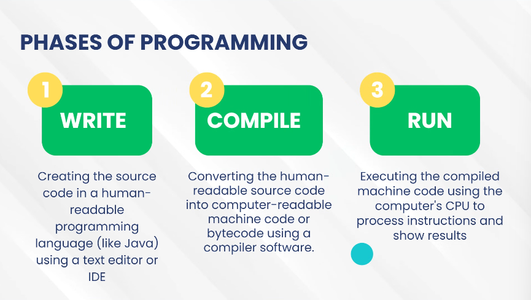

CC23 units
Fundamentals of Programming
CC2: Fundamentals of Programming
COMPUTER PROGRAMMING
Programming is just writing instructions that a computer follows.
The computer is dumb. It does not think, it does not guess. It only does exactly what you
tell it, in the exact order you tell it. Programming is you telling it what to do.
Design -> Write -> Test -> Maintain. That's the whole job.
You dont just write it once, you keep fixing and updating it.
Why do we need a language for this? Because you think in ideas and the computer only
understands on/off electricity. The programming language sits in the middle and translates
your idea into something the machine can run.
You -> Programming Language -> Computer
Where you already see this
ATM - you insert a card, code checks the PIN, asks the bank's database if you have money,
counts out the cash, prints receipt. Every step is someone's code.
Browsers and apps - Chrome or WhatsApp is code sending requests to a server, drawing text
and images on your screen, and reacting to your taps.
Traffic lights - not magic, just a timer loop. Or sensors under the road detecting a car
then the code decides when to switch.
Online shopping - code adds up your cart, applies tax and discount, talks to the card
company, then subtracts the item from warehouse stock.
Point is: programming isnt just websites. Anything that reacts to input is running code.
Programmers
Programs dont appear on their own. Humans make them, we call them programmers.
A programmer is someone who uses logic + a specialized language to boss the hardware
around. They write it, revise it, test it, update it. Thats the loop.
HOW COMPUTER PROGRAMS WORK
Computer System
A computer is a programmable electronic machine.
It takes INPUT (data) -> PROCESSES it -> gives OUTPUT in the format you wanted.
Two words to remember there:
- Digital electronic machine - it runs on electricity, 0s and 1s.
- Needs to be programmed - by itself it does nothing. Its a body with no brain until you
give it instructions.
A computer system = HARDWARE + SOFTWARE. You need both.
Hardware
Hardware is the physical stuff. If you can touch it, its hardware.
Keyboard, RAM, CPU, screen, cables.
Easiest way to remember it:
If the computer is a human body, hardware is the bones, muscles, and organs.
Hardware gives the computer the ability to do things. But it doesnt know WHAT to do.
A body with no instructions just sits there.
"Tangible components that work together with software to make the computer function."
Software
Software is the instructions. You cant touch it, you can only see it working on screen.
Going back to the body analogy - if hardware is the body, software is the thoughts telling
the body to move.
Why software matters:
- It tells the hardware how to actually do a task.
- It makes the computer useful (work, games, chatting).
- You can update or replace it WITHOUT buying new hardware. Same laptop, new Windows.
"The programs or instructions that tell hardware what to do."
The 4 units of a computer
By function, a computer is grouped into 4:
- Input Device - where data comes in (keyboard, mouse, mic)
- CPU - the brain, does the actual processing
- Memory / Storage - where data is kept
- Output Device - where the result comes out (screen, speaker, printer)

Reading that diagram:
DATA enters the Input unit -> goes to the CPU -> comes out as INFORMATION.
Data vs Information - data is the raw stuff you typed in, information is the processed
result that actually means something.
Inside the CPU:
- ALU (Arithmetic Logic Unit) - does the math and the comparisons
- Registers - super small super fast storage right beside the ALU
- CU (Control Unit) - the manager, tells everything else when to move
Storage unit:
- Primary storage (RAM) - fast, temporary, dies when you shut down
- Secondary storage (HDD/SSD) - slower, permanent, survives shutdown
Everything the CPU works on has to pass through primary storage first. Thats why the
arrows go Input -> Primary storage -> Output.
PROGRAMMING LANGUAGE
A programming language is the middle man between you and the machine.
Instead of flipping millions of on/off switches yourself, you write statements that look
like English - read, write, add - and the language handles the switches for you.
Thats why programming got easier over time. Old programmers actually had to think in
switches. Now you just type print("hi").
Two types
LOW-LEVEL - close to the machine (Assembly). Fast, but painful to read.
HIGH-LEVEL - close to humans (Java, Python, C++). Easy to read, slightly slower.
The rule of thumb: the closer to the machine, the faster it runs but the harder it is on
you. The closer to humans, the easier on you but you give up some control/speed.
Machine Language
The actual language the CPU speaks. Pure binary, only 0 and 1.
Also called machine code or object code.
- Humans basically cant read it in raw form.
- The CPU executes it directly, no translation needed. This is the finish line - every
language you write eventually becomes this.
Assembly Language
One step above binary. Still low-level, still talks directly to hardware.
Instead of 0s and 1s it uses mnemonics - short word-ish symbols like Add, Sub, Mul.
So its readable by humans, barely.
Its the middle step between a high-level language like C++ and pure binary.
But the computer still doesnt understand it, so you need an ASSEMBLER to convert
assembly -> machine code.
High-Level Language
The generation we actually use. Written so BOTH humans and computers can work with it.
Easy for humans because it uses real words, symbols and phrases to express logic instead
of raw machine operations.
Example: Java, Python, C++, JavaScript, Ruby
Common languages and what theyre used for

JAVASCRIPT - web dev and apps, server-side, mobile apps, machine learning, IoT, automation,
embedded systems, chatbots. Basically the language of the web that leaked everywhere else.
SWIFT - iOS apps, macOS apps, deep learning, IoT, server-side, open-source, machine
learning, automation. Apple's language.
C# - game development, web apps, IoT, backend services, Windows apps, robotics, cloud,
database programs. Microsoft's language, big in Unity.

PYTHON - data science, machine learning, web dev, automation, game dev, data analysis, data
visualization, AI. The easy one, king of data and AI.
JAVA - android apps, server-side, enterprise apps, web apps, big data, game dev, IoT,
cloud. The corporate workhorse, runs anywhere.
C++ - game dev, GUI apps, operating systems, database systems, embedded, networking, VR,
computer vision. The fast one, used when performance matters.
Notice they overlap alot. Most languages CAN do most things - you pick based on what its
best at and what already has support for it.
TRANSLATORS
The computer only understands 0s and 1s. You dont write 0s and 1s.
So something has to convert your code. Thats a translator.
Translator = a program that turns source code into machine code.
Yes - a program that helps you make programs.
Source code vs Object code
SOURCE CODE - what you wrote. Human readable. The .java or .py file.
OBJECT CODE - what came out of the translator. Machine readable, executed by the CPU
directly.
Source code -> translator -> object code
You can read source code easily because its meant for humans.
You cant read object code because its stored in machine/binary format.
TYPES OF TRANSLATORS
Assembler
Converts ASSEMBLY language -> machine code.

Source Code (Assembly) -> Assembler -> Object Code (Machine Language)

Step by step:
- Programmer writes instructions using mnemonics and symbols (assembly).
- Assembler translates those into machine code (0s and 1s) the CPU understands.
- What comes out is object code, and the computer can now run it.
Remember: assembler is ONLY for assembly language. Its not for Python or Java.
Compiler
Converts the ENTIRE high-level source code into machine code all at once, BEFORE the
program runs.
So: translate everything -> then run.
- If your code breaks the language rules, it lists ALL the errors at once.
- Much faster to run than an interpreter, since translating is already done beforehand.
- Downside - getting 50 errors dumped on you at once is hard to debug.
Compiled languages: C, C++, Objective C, Swift, Pascal
Interpreter
Same job as a compiler but it goes LINE BY LINE instead of all at once.
- It runs each line as it translates it.
- The moment it hits an error, it stops right there and reports it.
- Easy to debug because you know exactly which line died.
- But slower overall, because its translating while running.
Interpreted languages: Python, Ruby, JavaScript, Perl

The loop in that diagram:
Source Code -> Interpreter -> Executable Code / Output -> Get Next Instruction -> back to
Source Code, repeat until the program ends.
- Source code is what you wrote (Python, JavaScript).
- Interpreter reads ONE instruction, translates it to binary.
- That instruction runs on the CPU and produces output.
- Interpreter goes back and grabs the next line. Repeat.
Quick comparison:
COMPILER - translates all, then runs. Faster to run, errors come in one big pile.
INTERPRETER - translates and runs one line at a time. Slower, but errors are easy to find.
Hybrid
Combination of both. This is what Java does.
It compiles your source code into BYTECODE (not machine code yet), then a runtime engine
interprets that bytecode. For Java that engine is the JVM (Java Virtual Machine).
- Like a compiler - it translates the whole program into an intermediate form first.
- Like an interpreter - it executes that intermediate code line-by-line at runtime.

.java -> Java Compiler -> .class (bytecode) -> JVM -> Output
- You write .java - human readable, high level.
- Java Compiler turns it into .class bytecode. Note: bytecode is NOT object code yet, its
an in-between form. - Bytecode gets passed to the JVM.
- JVM either interprets it line by line, or uses JIT (Just In Time) compilation to turn it
into native machine code for speed. - JVM runs it and you get your output.
More on bytecode:
- Bytecode is not the machine language of any specific computer, but its close to the
machine language of most computers. - The JVM is the interpreter that translates and executes that bytecode.
- Because of this, Java bytecode runs on ANY computer that has a JVM. Thats the whole
"write once, run anywhere" thing. - Thats also why you usually type two commands - one to compile into bytecode, one to run
it. The run command tells the JVM to execute the bytecode.
Why do it this way? Because you compile once and the SAME .class file works on Windows,
Mac, Linux. With a normal compiler youd have to recompile for each one.
THE PROGRAM DEVELOPMENT PROCESS

Three phases:
- WRITE - you type the source code in a human-readable language (like Java) using a text
editor or IDE. - COMPILE - a compiler converts your source into machine code or bytecode.
- RUN - the CPU executes it and you finally see the result.
If you skip compile, theres nothing for the CPU to run. If compile fails, you go back to
write. You will do this loop hundreds of times.
HISTORY OF JAVA
- Made by James Gosling in the early 1990s.
- The goal wasnt even computers - they wanted a language for digital devices like set-top
boxes and TVs. They considered using C++ but rejected it. - Project name: the Green Project. Early language name: Greentalk, file extension .gt
- Renamed to Oak, after an oak tree Gosling could see from his office.
- Had to drop Oak too - Oak Technologies already trademarked it.
- Final name: JAVA, named after a type of espresso bean, because he thought of it while
drinking coffee near his office. Thats it. Thats the reason. - Built on these principles: Robust, Portable, Platform Independent, High Performance,
Multithread. - TIME MAGAZINE called it one of the Ten Best Products of 1995.
Java itself
- General, all-purpose language. Class-based and object-oriented.
- Designed to have as few application dependencies as possible - meaning it doesnt need
much extra installed to run. - Java 1.0 released 1995. Oracle calls the open version the JDK.
- As of August 2026 the latest is Java 26 (Java SE 26).
- Sun Microsystems made it, Oracle bought Sun in 2010 and now steers Java.
JDK, JRE, JVM
These three confuse everyone. Simplest version:
JDK contains JRE. JRE contains JVM.
JDK = for making Java programs
JRE = for running Java programs
JVM = the thing that actually executes them
JDK (Java Development Kit)
The full package for DEVELOPING Java apps. Contains the Java Compiler, dev tools,
libraries, and documentation.
You need this if you want to write, compile, and build Java programs.
It includes the JRE too - obviously, since you need to run your app to test it.
JRE (Java Runtime Environment)
The package for RUNNING Java apps. Includes the JVM plus the libraries needed for
execution.
This is for people who just want to run a Java app, not build one. No compiler here.
JVM (Java Virtual Machine)
The part that actually executes the bytecode.
- Its platform independent - write your Java once, run it on any system that has a JVM.
- It manages memory and handles garbage collection (automatically cleaning up memory you
arent using anymore). - It provides the runtime services that keep your program running efficiently.
Summary
JRE gives the environment to execute Java apps.
JVM executes the bytecode and manages runtime stuff.
JDK is for developing, and it includes the compiler.
The compiler turns your readable Java into bytecode.
The JVM acts as the interpreter that executes that bytecode.
ERRORS AND DEBUGGING
Whenever the compiler or interpreter hits an invalid statement - a syntax error, or you
using the language wrong - it throws an error message at you.
Then you fix it and translate again. Compile or interpret, see what breaks, fix, repeat.
Finding and fixing all your syntax errors is the FIRST part of debugging.
Debugging = freeing the program of all errors.
Note the word "first part" - syntax errors are the easy ones, the compiler literally points
at them. The harder ones are logic errors where the code runs fine but gives the wrong
answer. Nothing points those out for you.
Write -> Compile -> Error -> Fix -> Compile -> Run.
That loop IS programming. You will spend more time debugging than writing.